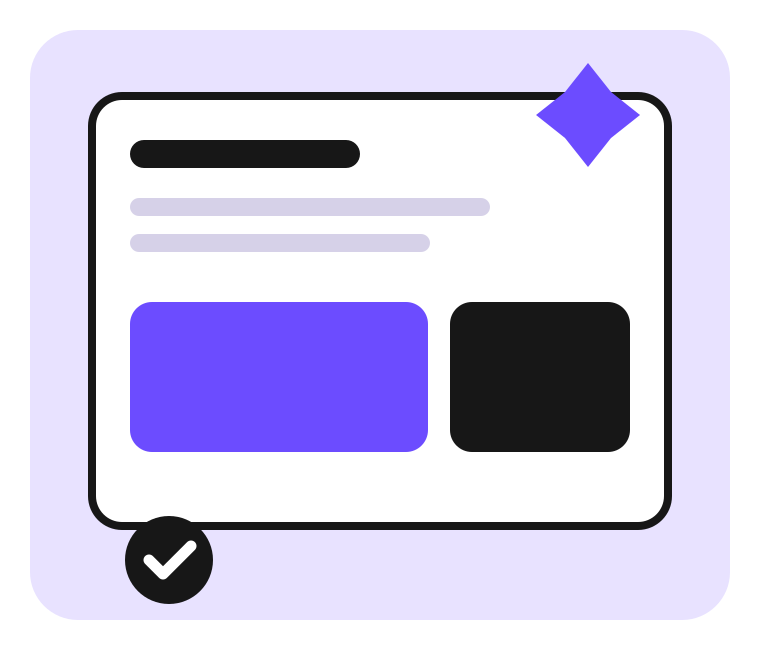

Landing Page
Hierarquia visual, conteúdo e chamadas para ação.
Ver projeto →Hoje vamos avançar no Flexbox: além de posicionar elementos, vamos controlar quanto espaço cada item ocupa dentro do layout.

Os cards abaixo ajudam a observar como o Flexbox distribui espaço disponível entre itens.
Hierarquia visual, conteúdo e chamadas para ação.
Ver projeto →Informações organizadas em blocos claros e consistentes.
Ver projeto →Projetos, habilidades e experiências em uma única interface.
Ver projeto →Produtos, categorias e ações de compra com boa organização.
Ver projeto →Componentes simples e uma navegação visualmente consistente.
Ver projeto →Primeiro entendemos o conteúdo e a hierarquia.
Depois distribuímos os elementos dentro do espaço disponível.
Por fim ajustamos proporção, alinhamento e espaçamento.